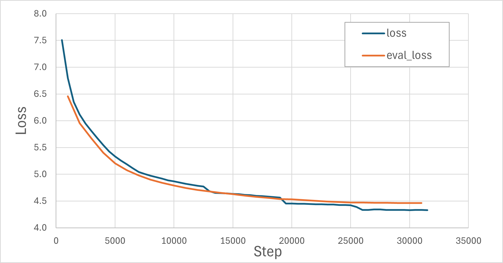

基于GPT2的古诗生成器 —— 预训练篇¶
发布于：2026-05-02 | 分类：machine learning
预训练过程相对标准化流水化或者说机械化，网上有很对代码可以参考，包括本文具体代码也是参考自网络。因此，这里不详细展开代码，而是从原理上剖析和理解各个步骤：
- 训练分词器
- 配置模型
- 加载和处理数据
- 配置训练参数和启动训练
0. 预训练的本质：语言建模任务¶
在开始具体训练流程之前，先理解预训练到底在做什么。GPT系列模型使用的是 因果语言建模（Causal Language Modeling, CLM），核心思想极其朴素：
给定前文，预测下一个 token。
举个例子，给定诗句"落霞与孤鹜齐"，模型需要预测下一个字最可能是"飞"。训练时，我们把整首诗喂给模型，让它逐token地预测：
输入: 落 霞 与 孤 鹜 齐
预测: 霞 与 孤 鹜 齐 飞这就是所谓的"自回归" —— 每一步的预测都基于之前所有已生成的 token。
预训练最巧妙的地方在于：数据自带标签，因此预训练是"无监督"的。你不需要人工标注，文本本身就是监督信号。
对于一首诗：
白日依山尽，黄河入海流。欲穷千里目，更上一层楼。模型自动构造训练样本：
| 输入（前文） | 目标（下一个token） |
|---|---|
| 白 | 日 |
| 白日 | 依 |
| 白日依 | 山 |
| ... | ... |
| 白日依山尽，黄河入海流。欲穷千里目，更上一层 | 楼 |
85万首诗，假设每首平均40个字符，总共就有约3400万个训练样本——全部自动生成，无需任何人工标注。因此，大语言模型的预训练数据可以是海量的。
1. 分词器：让模型"认识"汉字¶
现在，我们来到预训练流程的第一步。模型不能直接处理原始文本，需要先将文字转换为数字——这就是分词器（Tokenizer）的工作。
最简单的想法：每个汉字一个ID。但这有几个问题：
- 词表太大：常用汉字8000+，加上生僻字轻松过万，但很多字出现频率极低，浪费模型容量。
- 丢失语义组合："明月"作为一个整体比"明"+"月"更有诗意，字级别分词无法捕捉这种搭配。
- 序列变长：同样一句话，字级别token数远多于子词级别，增加计算量。
BPE（Byte Pair Encoding）是一种**子词分词**算法，核心思想是：从字符开始，反复合并最高频的相邻符号对。
初始: 每首诗被拆成单个字符
第1轮: "明"+"月" → "明月" （出现10万次，最高频）
第2轮: "清"+"风" → "清风" （出现8万次）
第3轮: "江"+"山" → "江山"
...
第N轮: 直到词表达到设定大小这样，"明月几时有"可能被切分为 ["明月", "几", "时", "有"]，既保留了高频搭配，又能用有限的词表覆盖所有文本。
自定义分词器的训练过程¶
本项目使用HuggingFace的 tokenizers 库训练BPE分词器，代码见 train_tokenizer.py。
第一步：语料准备
从 poetry.csv 中提取所有诗的正文，每首末尾添加 <EOS> 标记，写入纯文本文件：
for row in reader:
content = row.get("content", "").strip()
if content:
f_out.write(f"{content}<EOS>\n")第二步：训练分词器
tokenizer = ByteLevelBPETokenizer()
tokenizer.train(
files=[filename],
vocab_size=20000, # 词表大小
min_frequency=10, # 最少出现10次才收录
special_tokens=[
"<s>", "<pad>", "</s>", "<unk>", "<mask>", "<EOS>"
]
)关键参数说明：
| 参数 | 值 | 说明 |
|---|---|---|
vocab_size |
20000 | 小模型建议10k-32k，2万对古诗场景足够 |
min_frequency |
10 | 过滤掉只出现个位数的罕见字/组合，减少噪声 |
special_tokens |
6个 | <EOS> 标记诗句结束，<pad> 用于批次填充，<unk> 处理未知字符 |
第三步：加载与验证
训练完成后，用 GPT2TokenizerFast 加载并添加特殊token：
tokenizer = GPT2TokenizerFast.from_pretrained('tokenizer')
tokenizer.add_special_tokens({
"eos_token": "<EOS>",
"additional_special_tokens": ["<EOS>"]
})
tokenizer.pad_token = tokenizer.eos_token # 用EOS作为padding分词效果演示¶
用测试脚本 test_tokenizer.py 看看实际效果：
原始文本: 汉陵今日无抔土，惟独先生有钓台。<EOS>
Token IDs: [796, 920, 1150, 309, 10628, 1188, 264, 912, 546, 1722, 330, 7649, 262, 20001]
decoded: 汉陵今日无抔土，惟独先生有钓台。<EOS>
切分词块: ['汉', '陵', '今日', '无', '抔', '土', '，', '惟', '独', '先生', '有', '钓台', '。', '<EOS>']可以看到，BPE分词器将诗句切分为有意义的子词单元。高频词如“今日”、“先生”、“钓台”被保留为整体，标点符号和 <EOS> 也被正确识别。最终词表大小为 20001（20000个BPE token + 1个额外特殊 token）。
2. 模型架构：搭一个迷你 GPT2¶
有了分词器，接下来搭建模型。本项目不从头实现Transformer，而是使用HuggingFace的 GPT2Config 配置一个迷你版 GPT2。
GPT2Config参数详解¶
config = GPT2Config(
vocab_size=len(tokenizer), # 20001
hidden_size=768, # 隐藏层维度
num_hidden_layers=8, # Transformer层数
num_attention_heads=12, # 注意力头数
max_position_embeddings=256 # 最大序列长度
)
model = GPT2LMHeadModel(config)| 参数 | 本项目 | 标准GPT2-small | 说明 |
|---|---|---|---|
vocab_size |
20001 | 50257 | 匹配自定义分词器 |
hidden_size |
768 | 768 | 与标准一致 |
num_hidden_layers |
8 | 12 | 减少4层，降低参数量 |
num_attention_heads |
12 | 12 | 与标准一致，每头64维 |
max_position_embeddings |
256 | 1024 | 一首诗+指令足够 |
72M 参数是怎么算出来的¶
对比标准GPT2-small的124M参数量，本项目迷你GPT2模型参数约为 72.26M，主要分布在词嵌入和解码器部分。
-
Token Embedding（词嵌入）
vocab_size × hidden_size = 20001 × 768 ≈ 15.36M -
Position Embedding（位置嵌入）
max_position × hidden_size = 256 × 768 ≈ 0.20M -
Decoding Block（解码器块）
每个 Block 约 7.1M，8层共约 56.8M：
# Q、K、V 投影各 768×768，输出投影 768×768 Multi-Head Self-Attention：4×768×768 ≈ 2.36M # 两层全连接 768→3072 和 3072→768 Feed-Forward Network：2×768×3072 ≈ 4.72M # 两个层归一化，每个 `2×768` LayerNorm：2x2×768 ≈ 3K -
LM Head（输出头）
hidden_size × vocab_size = 768 × 20001 ≈ 15.36M实际上GPT2中LM Head与Token Embedding 共享权重（weight tying），所以不重复计算。
总计：15.36M + 0.20M + 56.8M ≈ 72.36M
关于共享权重的展开：
共享权重可以直接减少参数量，数学意义上也是合理和自然的。Token Embedding 将每个 token 转换为高维表示（例如本文的768），注意力层的输出也是768维的向量，最后 LM Head 需要通过权重矩阵将这个高维向量转换回词表输出，对应下一个 token 的预测值。那么直接从 Token Embedding 中找最接近的向量（夹角最小、点积最大）是不是很合理？这不正是 LM Head 的操作嘛 -> 注意力层输出矩阵乘以 权重矩阵 再 softmax。所以让权重矩阵等于 Token Embedding 矩阵是不是很合理？好吧，有点跑题了。
3. 数据加载与处理¶
一个标准的训练流程是构造 transformers.Trainer 实例，然后调用 trainer.train() 开始训练。我们看一下 Trainer 的关键参数：model上一节讲完了，args是下一节要讲的训练参数，本节介绍数据集 train_dataset、eval_dataset 和数据加载器 data_collator。
train_dataset, eval_dataset = load_tokenized_dataset()
trainer = Trainer(
model=model,
args=training_args,
data_collator=DataCollatorForLanguageModeling(tokenizer=tokenizer, mlm=False),
train_dataset=train_dataset,
eval_dataset=eval_dataset,
callbacks=[VisualProgressCallback()]
)
trainer.train()数据加载流程¶
标准函数 datasets.load_dataset 直接加载CSV文件，然后 map 方法依次将每个样本处理为最终需要的格式，这为初始数据集的准备保留了一定的自由度。
def load_tokenized_dataset():
def tokenize_function(examples):
texts = [f"{text}<EOS>" for text in examples["content"]]
return tokenizer(texts, truncation=True, max_length=256)
raw_dataset = load_dataset("csv", data_files='./dataset/poetry.csv', split="train")
tokenized = raw_dataset.map(tokenize_function, batched=True, num_proc=4,
remove_columns=raw_dataset.column_names)
split_dataset = tokenized.train_test_split(test_size=0.05, seed=42)
return split_dataset["train"], split_dataset["test"]关键细节：
- 每首诗末尾追加 <EOS>，让模型学会何时"收尾"
- truncation=True, max_length=256：超过256个token的诗会被截断
- num_proc=4：4进程并行处理，加速tokenize
- train_test_split(test_size=0.05)：95%训练 / 5%验证
最终数据量：训练集 810,715 条，验证集 42,670 条。
DataCollatorForLanguageModeling 的工作原理¶
HuggingFace提供了 DataCollatorForLanguageModeling，它进一步处理原始数据集为大模型训练所需的格式。具体地，它自动完成两件事：
（1）自动右移构造 labels
对于 CLM 任务，labels 就是 input_ids 右移一位。这就是开头提到因果语言模型预测下一个 token 的基本任务。
# 原始文本: "白日依山尽<EOS>"
input_ids = [白, 日, 依, 山, 尽, <EOS>]
labels = [日, 依, 山, 尽, <EOS>, -100] # 最后一个位置没有目标，设为-100DataCollatorForLanguageModeling 在内部自动完成这个移位操作，设置 mlm=False 表示使用 CLM 模式而非 MLM 模式。
CLM 是本文开头提到的因果语言模型，MLM 是掩码语言模型（Masked Language Modeling）。
2. Padding 与 Attention Mask
同一批次中的诗句长度不同，需要padding到统一长度：
# batch中两条数据，长度不同
"白日依山尽<EOS>" → [白, 日, 依, 山, 尽, <EOS>] # 6个token
"白日放歌须纵酒<EOS>" → [白, 日, 放, 歌, 须, 纵, 酒, <EOS>] # 8个token
# padding后（以批次中最长的序列为准，统一补到8）
input_ids: [[白, 日, 依, 山, 尽, <EOS>, <PAD>, <PAD>],
[白, 日, 放, 歌, 须, 纵, 酒, <EOS>]]
attention_mask: [[1, 1, 1, 1, 1, 1, 0, 0 ],
[1, 1, 1, 1, 1, 1, 1, 1 ]]attention_mask 标记哪些位置是真实token（1），哪些是padding（0），确保模型不会在padding上浪费注意力。
4. 训练配置与超参数¶
关键超参数及其说明如下。
training_args = TrainingArguments(
output_dir="checkpoints",
num_train_epochs=5,
per_device_train_batch_size=128,
save_steps=500,
save_total_limit=4,
logging_steps=500,
learning_rate=3e-4,
warmup_steps=1000,
lr_scheduler_type="cosine",
weight_decay=0.01,
bf16=True,
fp16=False,
eval_strategy="steps",
eval_steps=1000,
save_strategy="steps",
)| 参数 | 值 | 说明 |
|---|---|---|
num_train_epochs |
5 | 85万条数据，5轮足够收敛 |
per_device_train_batch_size |
128 | 64GB显存可以开大batch，加速训练 |
learning_rate |
3e-4 | 小模型的标准学习率，GPT2论文使用2.5e-4~5e-4 |
warmup_steps |
1000 | 前1000步线性增长学习率，避免初期梯度不稳定 |
lr_scheduler_type |
cosine | 余弦退火，训练后期平滑降低学习率 |
weight_decay |
0.01 | L2正则化，轻微防止过拟合 |
bf16 |
True | BF16混合精度，节省显存且数值稳定性好 |
eval_steps |
1000 | 每1000步在验证集上评估 |
save_steps |
500 | 每500步保存checkpoint |
为了直观感受训练进展，实现了一个回调函数 VisualProgressCallback，每500步用固定提示词“落霞与孤鹜齐飞”试运行。这个回调让我们在训练过程中就能看到模型“写诗”能力的进化，比盯着loss数字直观得多。
class VisualProgressCallback(TrainerCallback):
def on_log(self, args, state, control, model=None, **kwargs):
if state.global_step > 0:
prompt = "落霞与孤鹜齐飞"
inputs = tokenizer(prompt, return_tensors="pt").to(model.device)
model.eval()
with torch.no_grad():
outputs = model.generate(
**inputs,
max_new_tokens=100,
do_sample=True,
top_k=50, top_p=0.95, temperature=0.8,
pad_token_id=tokenizer.eos_token_id
)
model.train()
decoded_text = tokenizer.decode(outputs[0], skip_special_tokens=True)
print(f"生成的文本内容：\n{decoded_text}")5. 训练过程实录¶
训练在64GB显存的异构加速卡上运行，总耗时约 5.3小时（18930秒），共 31,670步。Loss从7.5降到4.33，验证集loss从6.46降到4.46，两者差距始终很小，说明没有明显过拟合。

各阶段的生成效果变化:
第500步：完全乱码
落霞与孤鹜齐飞，一自得与有下。朝无相作来，为此此有出一。从无非成作，为不一以非。不以生不如，不道于。无非生，不。为如其，君。一所，如不自。愿，三无。我，以其。神，无言。为，方，以于。其，我。如，心，我，与。两，不与
模型还处于"牙牙学语"阶段，输出的"诗句"毫无意义，只是随机token的堆砌。
第2000步：开始有诗词的外形
落霞与孤鹜齐飞，风静泠泠木叶飞。自是山僧生夜坐，一歌明月是青山。老游一友同吟处，却把红尘又倚楼。惟有扁舟有明月，人间何处有人间。一篇不问花如海，小鹤都从鹤外船。只恨故人无有子，不知无子便蹉跎。故人多病如回首，万里江南正白头。千里青山已若何，悠悠风雨有相思。天涯往事须千里，江上青山一惘然
虽然意象跳跃、逻辑松散，但已经出现了"明月"、"青山"、"天涯"等诗词常见意象，五言和七言的节奏感也开始显现。
第20000步：开始有诗词的神态
落霞与孤鹜齐飞，落日西风下翠微。渡口晚潮犹未落，沙边寒雁正思归。百年世事随流水，万里乡心趁落晖。赖有故人相慰藉，一樽重酌细论诗。百年事业共悠悠，回首西风念旧游。天上麒麟开御座，人间鹦鹉羡江楼。青山落日双飞鸟，落日西风一旅愁。回首不堪回首处，不胜愁思上扁舟。秋净寒江百尺矶，渚宫斜日暮云低。数声过雁天边去，万里归鸿天际归。
不仅逐渐学到了押韵（"飞"、"微"、"归"、"晖"）和对仗（"百年世事随流水，万里乡心趁落晖"），意象也更加丰富且协调（"落日"、"晚潮"、"归雁"、"百年世事"、"万里乡心"）；前八句也能隐约感受律诗的起承转合。
6. 小结：预训练教会了模型什么¶
经过5.3小时、31670步的训练，模型从随机权重变成了一个"会写诗"的神经网络。它学到了：
- 诗词的韵律感：五言、七言的节奏，押韵、对仗的倾向。
- 常见意象搭配："明月"配"清风"，"扁舟"配"江湖"，"青山"配"绿水"。
- 基本的语法结构：主谓宾的排列，虚词的使用。
- 收尾能力：
<EOS>标记让模型知道何时该停。
但它还不会理解指令，例如按主题、体裁、风格等控制内容。这些能力需要下一篇的 监督微调（SFT） 来赋予：我们将构造4.9万条指令-回答对，用Completion-Only掩码技巧让模型只学习"回答"部分，在7.7分钟内让模型从"诗句接龙"进化为"按需创作"。
本文完整代码参考：
https://github.com/dothinking/llm_learning/tree/main/pre_training
GPT背景知识：